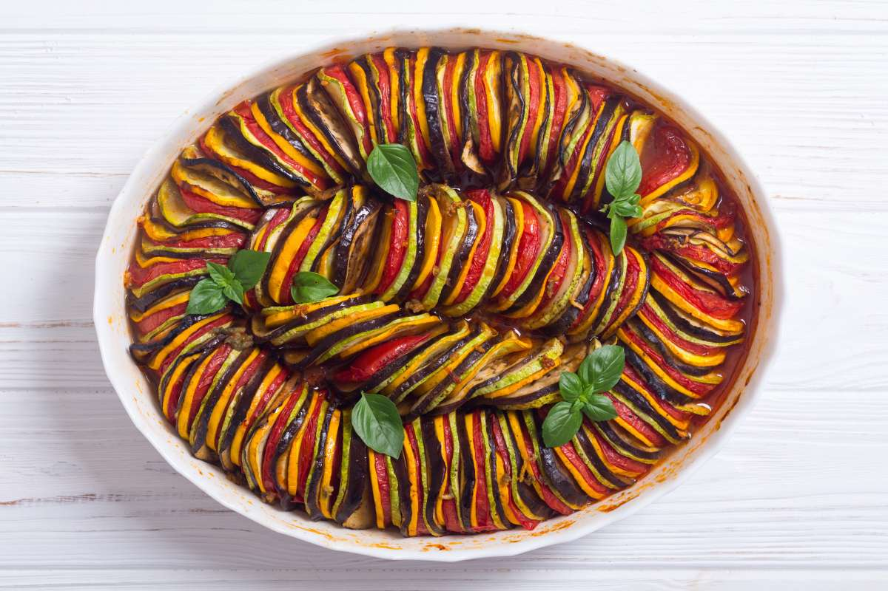

Ratatouille

Description
Ratatouille is a French dish of stewed vegatables, including tomato, garlic, onion, zucchini, eggplant, bell pepper, and leafy herbs.
It's a super healthy dish containing many vegetables and vibrant colors that will transport you into the heart of French cuisine.
Ingredients (8 servings)
Veggies
- 2 eggplants
- 6 roma tomatoes
- 2 yellow squashes
- 2 zucchinis
Sauce
- 2 tablespoons olive oil
- 1 medium white onion, diced
- 4 cloves garlic, minced
- 1 red bell pepper, seeded and diced
- 1 yellow bell pepper, seeded and diced
- kosher salt, to taste
- freshly ground black pepper, to taste
- 28 oz crushed tomatoes
- 2 tablespoons of thinly sliced fresh basil
Herb Seasoning
- 2 tablespoons of thinly sliced fresh basil
- 1 teaspoon minced garlic
- 2 teaspoons finely chopped fresh parsley
- 2 teaspoons fresh thyme leaves
- kosher salt, to taste
- freshly ground black pepper, to taste
- 4 tablespoons olive oil
Steps
- Preheat oven to 375°F.
- Slice the eggplant, tomatoes, squash, and zucchini into approximately 1-mm thick rounds and set aside.
- Make the sauce: Heat the olive oil in a 12-inch oven-safe pan over medium-high heat. Saute the onion, garlic, and bell peppers until soft, about 10 minutes. Season with salt and pepper, then add crushed tomatoes. Stir until the ingredients are fully incorporated. Remove from heat, then add basil. Stir once more, then smooth the surface of the sauce with a spatula.
- Arrange the veggies in alternating slices, (for example, eggplant, tomato, squash, zucchini) on top of the sauce, working from the outer edge to the center of the pan. Season with salt and pepper.
- Make the herb seasoning: In a small bowl, mix together the basil, garlic, parsley, thyme, salt, pepper, and olive oil. Spoon the herb seasoning over the vegetables.
- Cover the pan with foil and bake for 40 minutes. Uncover, then bake for another 20 minutes, until the vegetables are softened.
- Serve hot as a main dish or side. The ratatouille is also excellent the next day–cover with foil and reheat in a 350˚F (180˚C) oven for 15 minutes, or simply microwave to desired temperature.
- Enjoy!